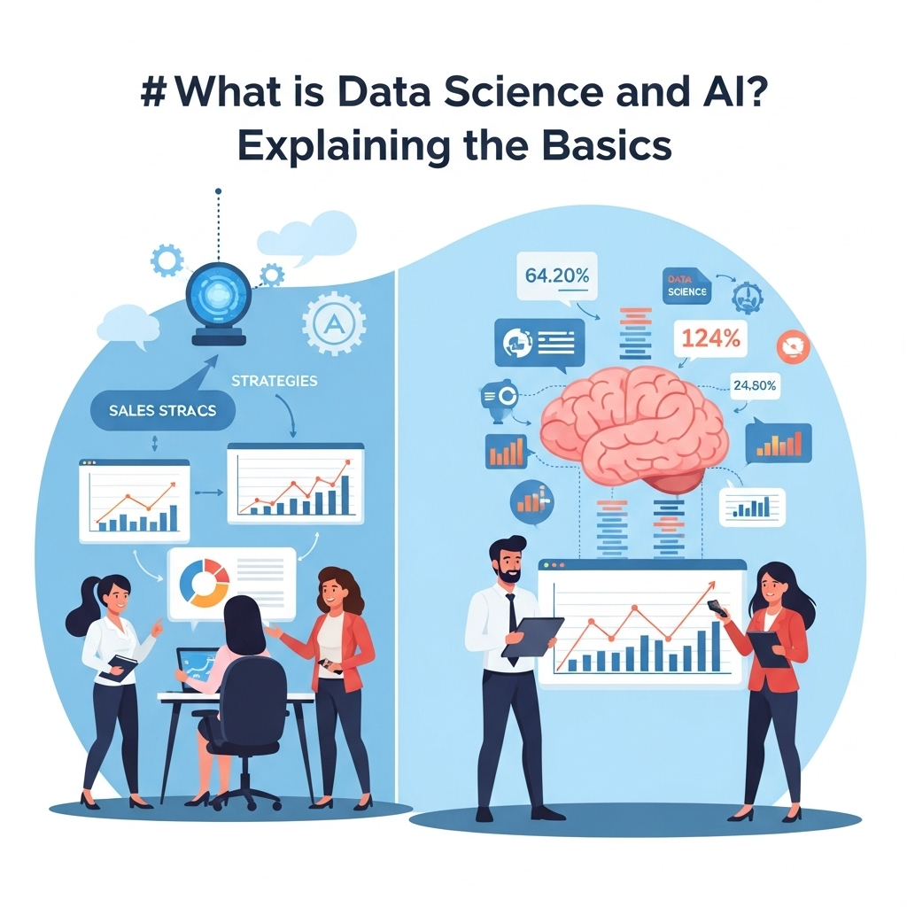
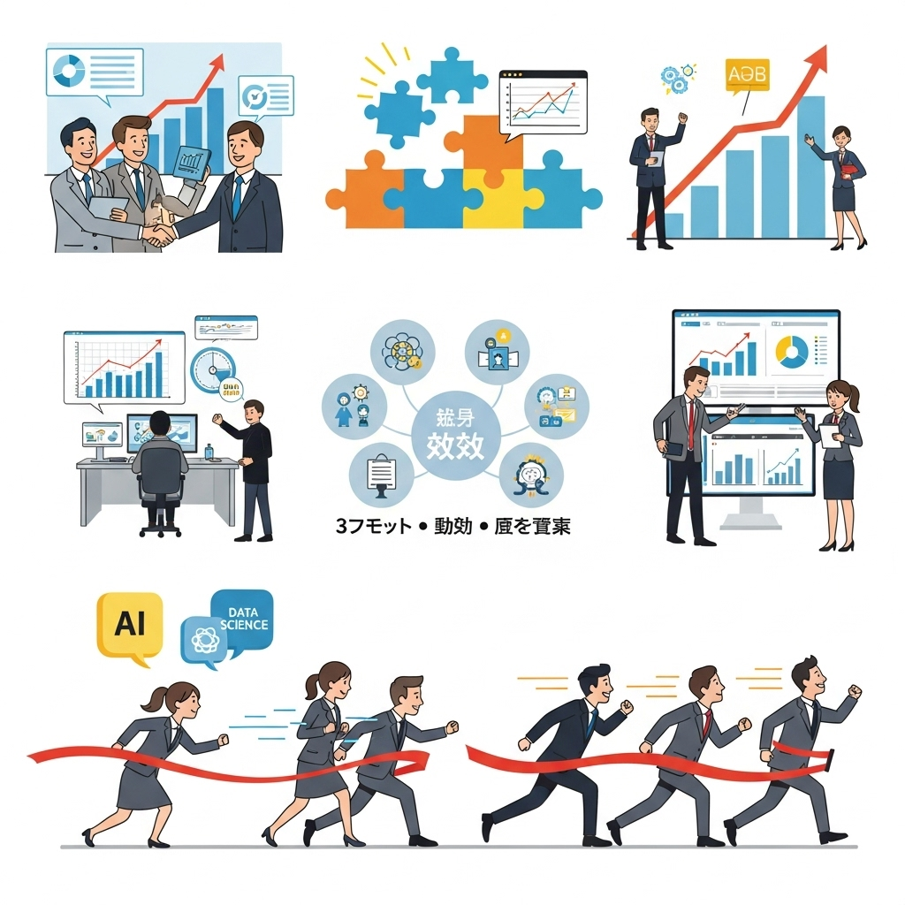
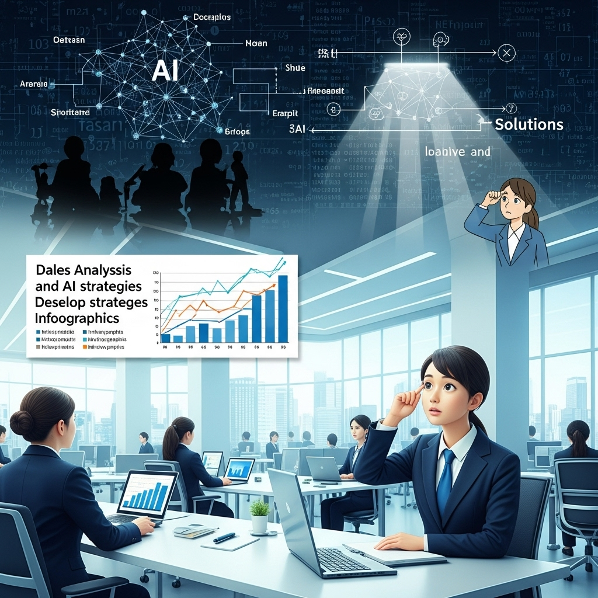
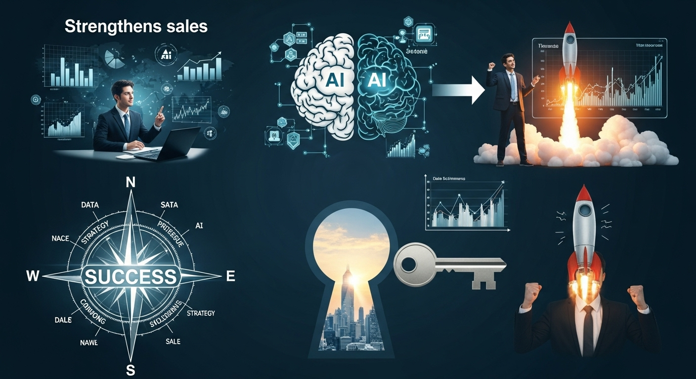

データサイエンスとAI活用で営業力強化！導入メリットと成功事例
導入
現代のビジネス環境は、かつてないほどのスピードで変化し続けています。市場のニーズは多様化し、顧客の購買行動も複雑化の一途をたどっています。このような状況下で、従来の経験や勘に頼った営業活動だけでは、競合他社に差をつけられ、成果を出し続けることが難しくなっていると感じている方も多いのではないでしょうか。
「もっと効率的に、確度の高い見込み客にアプローチできないだろうか」
「お客様一人ひとりに、本当に心に響く提案をしたい」
「日々の煩雑な業務に追われ、本来やるべき創造的な活動に時間が割けない」
営業の現場からは、日々このような切実な声が聞こえてきます。もし、あなたがこうした課題に少しでも心当たりがあるのなら、この記事はきっとお役に立てるはずです。
その解決の鍵を握るのが、「データサイエンス」と「AI（人工知能）」の活用です。これらの言葉を耳にすると、「何だか難しそう」「専門家でないと扱えないのでは？」といった印象を抱くかもしれません。しかし、ご安心ください。データサイエンスとAIは、もはや一部の専門家だけのものではなく、私たちのビジネスを力強くサポートしてくれる、身近で頼もしいパートナーとなりつつあります。
この記事では、データサイエンスとAIが営業活動をどのように変革するのか、その基本から具体的なメリット、実践的な導入ステップ、そして成功のためのポイントまで、一つひとつ丁寧に、わかりやすく解説していきます。専門的な知識がなくても理解できるよう、具体的な事例を交えながら、親しみやすい言葉でお伝えすることを心がけました。
読み終える頃には、データとAIという強力な武器を手に、自社の営業力を飛躍的に高めるための具体的な道筋が見えているはずです。未来の営業スタイルを共に描き、ビジネスの新たな可能性の扉を開いていきましょう。
データサイエンスとAI活用とは？基本を解説

営業力強化の新たな切り札として注目されるデータサイエンスとAI。しかし、これらの言葉が具体的に何を指し、ビジネスにどう関わってくるのか、正確に理解している方はまだ少ないかもしれません。まずは、この二つの概念の基本と、なぜ今、これらが重要視されているのかを、一緒に紐解いていきましょう。
データサイエンスとは？AIとの関係性
「データサイエンス」と聞くと、複雑な数式やプログラミングを思い浮かべるかもしれませんね。もちろん、それらも要素の一つではありますが、本質はもっとシンプルです。
データサイエンスとは、一言でいえば「データの中から、ビジネスに役立つ『宝物（価値ある情報）』を見つけ出すための学問であり、アプローチ」のことです。
私たちの周りには、日々、膨大な量のデータが生まれています。例えば、顧客の購買履歴、ウェブサイトの閲覧履歴、営業担当者の活動記録、市場のトレンドデータなど、その種類は多岐にわたります。これらは、ただそこにあるだけでは単なる数字や文字の羅列にすぎません。しかし、データサイエンスという”メガネ”をかけてこれらを分析することで、これまで見えなかった顧客の隠れたニーズや、ビジネスを成長させるためのヒント、未来を予測する手がかりといった「宝物」を発見することができるのです。
データサイエンスは、主に以下の3つの要素から成り立っています。
- 統計学・数学: データを正しく理解し、分析するための基礎となる学問です。データのばらつきや傾向を把握し、偶然ではない意味のあるパターンを見つけ出します。
- IT・コンピュータサイエンス: 膨大なデータを効率的に収集、処理、分析するための技術です。プログラミングやデータベースの知識などが含まれます。
- ビジネス・ドメイン知識: 分析対象となる業界や業務に関する深い知識です。例えば、営業分野であれば、顧客の意思決定プロセスや業界特有の商習慣などを理解していることが、データから意味のある洞察を得るために不可欠です。
データサイエンティストは、これら3つのスキルを駆使して、データという原石を磨き上げ、ビジネスを輝かせる宝石へと変える役割を担います。
では、AI（人工知能）は、このデータサイエンスとどのような関係にあるのでしょうか。
AIは、データサイエンスが「宝物」を見つけ出すための、極めて強力な「道具（ツール）」と考えるとわかりやすいでしょう。
AIは、人間のように学習し、推論し、判断する能力をコンピュータで実現しようとする技術の総称です。特に、近年注目されている「機械学習」という技術は、大量のデータの中から自動的にパターンや法則性を見つけ出し、それに基づいて未来を予測したり、物事を分類したりすることが得意です。
例えば、データサイエンスの目的が「成約しやすい顧客の特徴を見つけ出す」ことだとします。この目的を達成するために、AI（機械学習）というツールを使って、過去の膨大な成約データと失注データを学習させます。するとAIは、成約に至った顧客に共通する行動パターン（特定のウェブページを何度も見ている、特定の資料をダウンロードしているなど）を自動で発見し、「このような行動をとる顧客は、成約確率が80%です」といった予測モデルを構築してくれるのです。
このように、データサイエンスが「何をすべきか（目的）」を定め、AIがその目的を達成するための「具体的な方法（手段）」を提供する、という関係性にあります。両者は車輪の両輪のようなもので、互いに連携し合うことで、初めてその真価を発揮するのです。
データ・AI活用の重要性
なぜ今、これほどまでにデータやAIの活用が重要視されているのでしょうか。その背景には、ビジネスを取り巻く環境の劇的な変化があります。
1. 顧客の価値観と行動の多様化
インターネットとスマートフォンの普及により、顧客はいつでもどこでも情報を収集し、商品を比較検討できるようになりました。SNSの口コミ、レビューサイトの評価、インフルエンサーのおすすめなど、購買に至るまでの情報源は無数に存在します。かつてのように、企業側からの一方的な情報発信だけでは、顧客の心をつかむことは困難です。
顧客一人ひとりの興味関心や価値観は細分化し、「みんなが良いというもの」よりも「自分にぴったり合うもの」を求める傾向が強まっています。このような時代において、すべての顧客に同じアプローチをする「マスマーケティング」は通用しなくなりつつあります。
データとAIを活用すれば、顧客一人ひとりの行動履歴や属性データを分析し、その人が本当に求めているものは何かを深く理解することができます。そして、その理解に基づき、最適なタイミングで、最適な情報や提案を届ける「パーソナライズ」されたコミュニケーションが可能になるのです。これは、顧客満足度を高め、長期的な信頼関係を築く上で不可欠な要素となっています。
2. 競争環境の激化と変化のスピード
グローバル化やデジタル化の進展により、業界の垣根を越えた競争が激化しています。昨日まで競合ではなかった企業が、ある日突然、強力なライバルとして現れることも珍しくありません。また、市場のトレンドや顧客のニーズは、目まぐるしい速さで変化していきます。
このような環境で生き残るためには、変化の兆候をいち早く察知し、迅速かつ的確な意思決定を下す必要があります。しかし、人間の経験や勘だけに頼っていては、変化のスピードに対応しきれなかったり、判断を誤ったりするリスクが高まります。
データとAIは、市場の動向、競合の動き、顧客の声といった膨大な情報をリアルタイムで分析し、客観的な根拠に基づいた意思決定を支援してくれます。例えば、SNS上の口コミをAIで分析して新商品の評判を即座に把握したり、過去の販売データから数ヶ月先の需要を高い精度で予測したりすることが可能です。これにより、企業は常に一歩先を見据えた戦略を立て、競争優位性を確保することができるのです。
3. 労働人口の減少と生産性向上の必要性
日本をはじめとする多くの先進国では、少子高齢化による労働人口の減少が深刻な課題となっています。限られた人材でこれまで以上の成果を上げていくためには、業務の生産性を抜本的に向上させることが急務です。
特に営業活動においては、移動、書類作成、日報入力といった、直接的な価値を生まないノンコア業務に多くの時間が費やされているのが現状です。これらの業務に追われ、本来最も時間をかけるべき顧客との対話や提案内容の検討がおろそかになってしまっては本末転倒です。
AIは、こうした定型的で反復的な作業を自動化するのを得意としています。例えば、AIが最適な訪問ルートを提案して移動時間を短縮したり、商談の音声を自動でテキスト化して議事録を作成したり、SFA/CRMへの活動記録を自動入力したりすることが可能です。これにより、営業担当者は煩雑な作業から解放され、顧客との関係構築や課題解決といった、人間にしかできない創造的なコア業務に集中できるようになります。これは、個人の生産性向上だけでなく、従業員の働きがいや満足度の向上にも繋がる重要な取り組みと言えるでしょう。
ビジネスにおけるデータ・AI活用の役割
データとAIは、単なる業務効率化のツールにとどまらず、ビジネスのあり方そのものを変革するポテンシャルを秘めています。ビジネスにおけるその役割は、大きく3つのレベルに分けることができます。
レベル1：業務の「効率化・自動化」
これは、最もイメージしやすく、多くの企業が最初に取り組む活用レベルです。前述したように、これまで人間が手作業で行っていた定型業務をAIに任せることで、時間やコストを削減し、生産性を向上させます。
- 具体例:
- 議事録の自動作成
- 営業日報の自動入力
- 最適な訪問スケジュールの自動生成
- 顧客からの簡単な問い合わせへのチャットボットによる自動応答
このレベルの活用は、比較的導入しやすく、すぐに効果を実感しやすいというメリットがあります。まずはここから始め、データ・AI活用の効果を社内に浸透させていくのが良いでしょう。
レベル2：人間の「判断・意思決定の支援」
次のレベルは、AIがデータ分析によって得られた洞察を提供し、人間がより精度の高い判断を下せるように支援する役割です。AIは、人間では見つけられないようなデータの中の複雑なパターンや相関関係を発見し、「客観的な根句」を示してくれます。これにより、経験や勘といった主観的な要素に、データという客観的な視点が加わり、意思決定の質が飛躍的に向上します。
- 具体例:
- 過去のデータから、成約確度の高い見込み客をスコアリングして提示
- 顧客の購買履歴から、次におすすめすべき商品をレコメンド
- 市場データと過去の販売実績から、来期の需要を予測
- 商談データから、失注のリスクが高い案件をアラート
このレベルでは、AIは優秀な「参謀」や「アナリスト」のような存在として機能します。最終的な判断は人間が下しますが、AIが提供する情報があることで、より自信を持って、的確な打ち手を実行できるようになります。
レベル3：新たな「ビジネスモデルの創出」
最も高度な活用レベルが、データとAIを核として、これまでにない新しい価値やサービス、ビジネスモデルを生み出す役割です。これは、既存の業務を改善するだけでなく、事業そのものを変革するインパクトを持ちます。
- 具体例:
- 製造機械にセンサーを取り付け、稼働データをAIで分析。故障の予兆を検知し、壊れる前にメンテナンスを行う「予知保全」サービスを提供する。
- 個人の健康診断データや生活習慣データをAIで分析し、一人ひとりに最適化された健康増進プログラムや保険商品を提案する。
- 農地に設置したセンサーやドローンの画像データをAIで分析し、作物の生育状況に応じて水や肥料を自動で最適化する「スマート農業」を実現する。
このレベルに到達するには、技術的な知見だけでなく、業界構造や顧客ニーズを深く理解し、未来を構想する力が求められます。しかし、成功すれば、市場における圧倒的な競争優位性を確立し、業界のゲームチェンジャーとなることも可能です。
このように、データとAIの活用は、日々の業務改善から事業の根幹を揺るがすイノベーションまで、幅広い可能性を秘めています。まずは自社の課題に合わせて、どのレベルから活用を始めるかを検討することが、成功への第一歩となるでしょう。
データサイエンスとAI活用で得られるメリット

データとAIを営業活動に導入することは、単に流行に乗るということではありません。そこには、企業の成長を加速させ、営業担当者一人ひとりの働き方をより豊かにするための、具体的で計り知れないメリットが存在します。ここでは、その代表的な4つのメリットについて、詳しく見ていきましょう。
顧客理解深化とパーソナライズ提案
現代の営業において最も重要なことの一つは、「顧客を深く理解すること」です。しかし、顧客のニーズが多様化・複雑化する中で、一人の営業担当者が限られた時間の中で顧客のすべてを把握するのは至難の業です。そこで、データとAIが強力な武器となります。
1. 顧客の「声なき声」を聴く
顧客データは、まさに「宝の山」です。CRM（顧客関係管理）システムに蓄積された過去の商談履歴や問い合わせ内容、ウェブサイトの閲覧履歴、メールマガジンの開封率、セミナーへの参加履歴など、顧客が残してくれた一つひとつのデジタルな足跡。これらをAIで分析することで、顧客自身も気づいていないような潜在的なニーズや、次に求めているであろうサービス・商品のヒント、いわば「声なき声」を聴き取ることができます。
例えば、ある顧客が自社のウェブサイトで「コスト削減」に関するページの閲覧時間が長く、関連する資料をダウンロードしていたとします。さらに、過去の問い合わせ履歴を見ると、現在のシステムの運用コストについて質問していたことがわかりました。これらの断片的な情報をAIが統合的に分析することで、「この顧客は、現在の運用コストに課題を感じており、コスト削減に繋がる新たなソリューションを求めている可能性が非常に高い」というインサイト（洞察）を導き出すことができます。
営業担当者は、このインサイトを基に、単なる製品紹介ではなく、「御社の課題である運用コストを、弊社のこのサービスなら30%削減できます。その具体的な試算はこちらです」といった、的を射た提案を初回訪問時から行うことが可能になります。これは、顧客にとって「私たちのことをよく理解してくれている」という強い信頼感に繋がり、商談を有利に進める大きな要因となります。
2. 一人ひとりに響く「おもてなし」の実現
顧客理解が深まれば、次はそれを「パーソナライズ提案」に繋げることができます。これは、顧客一人ひとりの状況、興味、タイミングに合わせて、最適な情報や提案を届けるアプローチです。あたかも、優秀なコンシェルジュが、お客様の好みやその日の気分を察して、最適なサービスを提供するような「おもてなし」を、デジタルで実現するイメージです。
例えば、ECサイトでよく見かける「あなたへのおすすめ」機能が、その代表例です。AIが過去の購買履歴や閲覧履歴を分析し、「この商品を買った人は、こんな商品も見ています」と、個人の興味に合わせた商品を提案してくれます。
これをBtoBの営業活動に応用してみましょう。
- メールマーケティング: AIが顧客の役職や業種、過去の反応率などを分析し、一人ひとりにとって最も関心の高いであろうテーマのメールを、最も読まれやすい時間帯に自動で配信します。件名や本文も、顧客に合わせて微調整することで、開封率やクリック率を劇的に向上させることができます。
- 提案資料のカスタマイズ: AIが顧客の業界や企業規模、抱えている課題を分析し、提案資料の中で特に強調すべきポイントや、盛り込むべき導入事例を自動でレコメンドします。これにより、営業担当者は、ゼロから資料を作成する手間を省きつつ、顧客に最適化された質の高い提案書を短時間で作成できます。
- 次のアクションの提案: 商談後、AIがその内容を分析し、「次は、この課題に関連するこちらの導入事例をお送りするのが効果的です」「〇〇様は価格面を気にされていたので、費用対効果をまとめた資料を来週までにご提示しましょう」など、次に取るべき最適なアクションを営業担当者に提案します。
このようなパーソナライズされたアプローチは、顧客に「その他大勢」ではなく「特別な一人」として扱われているという満足感を与え、エンゲージメント（企業やブランドに対する愛着）を深めます。結果として、成約率の向上はもちろん、長期的なファン、つまりLTV（顧客生涯価値）の高い優良顧客を育てることに繋がるのです。
営業活動の効率化と生産性向上
営業担当者の時間は有限です。その貴重な時間を、いかにして価値の高い活動に集中させるか。これは、営業組織にとって永遠の課題と言えるでしょう。データとAIは、この課題に対する明確な答えを示してくれます。
1. 無駄な業務からの解放
営業の現場には、顧客との対話や提案といった本来のコア業務以外に、多くのノンコア業務が存在します。例えば、日報や週報の作成、CRMへのデータ入力、アポイント調整、移動ルートの検索、経費精算など、一つひとつは些細なことでも、積み重なると膨大な時間となります。
AIは、こうした定型的で反復的な作業を自動化・効率化することを得意としています。
- 音声認識AIによる議事録・日報作成: スマートフォンやICレコーダーで録音した商談の音声を、AIが自動でテキスト化。重要なキーワードや決定事項をハイライト表示してくれるため、議事録や日報の作成時間を大幅に削減できます。
- CRM/SFAへの自動入力: スケジューラーやメールの送受信履歴と連携し、顧客とのやり取りをAIが自動でCRM/SFA（営業支援システム）に記録します。手入力の手間が省けるだけでなく、入力漏れやミスを防ぎ、データの鮮度と正確性を保つことができます。
- AIによるスケジュール調整: 候補日時を複数提示し、相手が選ぶだけでアポイントが確定するツールや、移動時間や他の予定を考慮して最適な訪問スケジュールを自動で組み立ててくれるAIアシスタントなどを活用することで、煩わしい日程調整業務から解放されます。
- AIチャットボットによる一次対応: 顧客からのよくある質問や簡単な問い合わせに対して、24時間365日、AIチャットボットが自動で応答します。これにより、営業担当者はより複雑で高度な対応が求められる案件に集中することができます。
これらのツールを活用することで、営業担当者は1日あたり1〜2時間、あるいはそれ以上の時間を創出できると言われています。その時間を、顧客の課題を深くヒアリングしたり、提案内容を練り上げたり、新しい知識をインプットしたりといった、より創造的で付加価値の高い活動に充てることができるのです。
2.「やるべきこと」への集中
効率化によって生まれた時間は、生産性を高めるための最大の資源です。しかし、ただ時間ができても、次に何をすべきかが明確でなければ、宝の持ち腐れになってしまいます。データとAIは、「今、最も注力すべき顧客は誰か」「次に取るべき最適なアクションは何か」を提示し、営業担当者の活動を正しい方向へと導いてくれます。
その代表的な手法が「リードスコアリング」です。これは、見込み客（リード）の属性（企業規模、業種、役職など）や行動（ウェブサイト訪問、資料ダウンロード、セミナー参加など）をAIで分析し、成約に至る可能性を点数化（スコアリング）するものです。
スコアの高い見込み客は、自社の商品・サービスへの関心が高く、購買意欲が熟している可能性が高いと判断できます。営業担当者は、このスコアを参考にすることで、膨大な見込み客リストの中から、優先的にアプローチすべき相手を瞬時に見つけ出すことができます。
これにより、「手当たり次第に電話をかける」「とりあえず全件にメールを送る」といった非効率な活動がなくなり、限られたリソースを最も可能性の高い案件に集中投下できます。これは、営業担当者のモチベーション維持にも繋がります。成果の出にくい活動を延々と続けるよりも、手応えのある顧客と質の高いコミュニケーションを重ねる方が、仕事のやりがいや達成感を格段に高めるからです。
結果として、営業チーム全体の商談化率や成約率が向上し、組織としての生産性が飛躍的に高まるのです。
精度の高い需要予測と在庫最適化
営業活動は、単に目の前の顧客に商品を売るだけではありません。市場全体の需要を読み、適切な量の製品を、適切なタイミングで供給することも、ビジネスの成功に不可欠な要素です。特に、製造業や小売業、卸売業など、物理的な在庫を扱うビジネスにおいて、需要予測の精度は収益に直結する重要な課題です。
1. 勘と経験頼りからの脱却
従来の需要予測は、「去年の今頃はこれくらい売れたから、今年も同じくらいだろう」「最近、この商品の問い合わせが増えているから、多めに仕入れておこう」といった、担当者の経験や勘に頼る部分が大きいものでした。もちろん、熟練者の経験は貴重ですが、それだけでは市場の急激な変化や、これまで経験したことのない事象に対応することは困難です。
勘に頼った予測は、大きく二つのリスクを生み出します。
- 過剰在庫（機会損失）: 需要を過大に予測し、商品を仕入れすぎると、売れ残った商品は保管コストや管理コストの増大に繋がります。最悪の場合、品質が劣化したり、流行が過ぎたりして、廃棄せざるを得なくなることもあります。これは、直接的な損失であると同時に、本来であれば他の有望な商品に投資できたはずの資金を無駄にする「機会損失」でもあります。
- 在庫切れ（販売機会の損失）: 需要を過小に予測し、仕入れが不足すると、顧客が「欲しい」と思った時に商品を提供できない「在庫切れ（欠品）」が発生します。これは、目の前の売上を逃すだけでなく、「あのお店はいつも品切れだ」というネガティブな印象を与え、顧客が競合他社に流れてしまう原因にもなりかねません。
2. データが導く未来の売上
データサイエンスとAIは、この需要予測の精度を劇的に向上させます。AIは、過去の膨大な販売実績データはもちろんのこと、人間では到底処理しきれないような、多様で複雑なデータを組み合わせて分析することができます。
- 季節性・トレンド: 過去のデータから、商品ごとの季節的な需要の変動（夏に売れるもの、冬に売れるもの）や、長期的なトレンド（人気が上昇しているか、下降しているか）を自動で学習します。
- 天候データ: 気温や降水量、湿度といった天候データと販売実績を組み合わせることで、「気温が30度を超えると、この飲料の売上が20%増加する」といった相関関係を見つけ出し、天気予報に基づいた精度の高い予測を行います。
- イベント情報: 近隣で開催されるイベント、祝日、大型連休などの情報を取り込むことで、それに伴う需要の増減を予測に反映させます。
- SNS・ニュース: ソーシャルメディア上で特定の商品が話題になっていたり、テレビで紹介されたりといった情報をリアルタイムで分析し、突発的な需要の急増を予測します。
- 経済指標: 景気動向や為替レートといったマクロな経済指標も考慮に入れ、より長期的で大局的な視点からの予測を可能にします。
これらの多様なデータを統合的に分析することで、AIは「来週の火曜日、この店舗では商品Aが〇個売れる確率が95%です」といった、極めて精度の高い予測を、商品ごと、店舗ごと、日ごとに算出します。
この予測に基づいて発注や生産計画を立てることで、企業は過剰在庫や在庫切れのリスクを最小限に抑えることができます。つまり、無駄なコストを削減しつつ、販売機会の損失を防ぎ、収益を最大化することが可能になるのです。これは、キャッシュフローの改善や経営の安定化にも直結する、非常に大きなメリットと言えるでしょう。
新たなビジネス創出と競争力強化
データとAIの活用は、既存の業務を効率化したり、意思決定の精度を高めたりするだけにとどまりません。その真の力は、これまで誰も気づかなかった新たなビジネスチャンスを発見し、まったく新しい価値を創造することにあります。
1. データの中に眠る「次の一手」
企業が蓄積してきたデータは、顧客の行動、市場の動向、自社の強みや弱みが凝縮された、まさに「経営資源」です。このデータを深く分析することで、次のような新たなビジネスの種を見つけ出すことができます。
- 新商品・新サービスの開発: 顧客の購買データやウェブサイトの閲覧データを分析し、「Aという商品とBという商品を一緒に購入する顧客が多い」という事実がわかったとします。ここから、「AとBを組み合わせたセット商品を作れば、顧客の利便性が高まり、新たな需要を喚起できるのではないか」という新商品のアイデアが生まれます。また、顧客からの問い合わせやクレームのデータを分析し、そこに共通する不満や要望を見つけ出すことで、既存サービスの改善点や、それを解決する新サービスのヒントを得ることもできます。
- 新たな顧客セグメントの発見: これまで「若者向け」と考えていた商品が、データ分析の結果、意外にも「健康志向のシニア層」にも多く購入されていることが判明したとします。これは、これまでアプローチしてこなかった新たな顧客セグメントを発見したことを意味します。このセグメントに向けて、新たなマーケティング戦略を展開したり、パッケージデザインを変更したりすることで、新しい市場を開拓できる可能性があります。
- ビジネスモデルの変革: 例えば、製造業において、製品を販売するだけでなく、製品に搭載したセンサーから得られる稼働データをAIで分析し、故障の予兆を検知してメンテナンスを提供する「サブスクリプション型」の保守サービスを新たに始める、といったことが考えられます。これは、従来の「モノを売って終わり」のビジネスから、「モノを通じて継続的なサービスを提供する」という、LTV（顧客生涯価値）を最大化するビジネスモデルへの変革です。
2. 競合を凌駕する「データ駆動型企業」へ
データとAIを組織の隅々まで活用し、あらゆる意思決定をデータに基づいて行う企業のことを「データ駆動型（データドリブン）企業」と呼びます。このような企業は、競合他社に対して圧倒的な優位性を築くことができます。
なぜなら、データ駆動型企業は、常に客観的な事実に基づいて、迅速かつ的確な判断を下すことができるからです。
- 市場変化への迅速な対応: 競合が勘や経験に頼って右往左往している間に、データ駆動型企業は市場データの分析からいち早く変化の兆候を掴み、次の一手を打ちます。
- 顧客中心の経営: あらゆる施策が「データで証明された顧客ニーズ」に基づいて行われるため、顧客満足度が非常に高くなります。満足した顧客はリピーターとなり、良い口コミを広めてくれるため、安定した成長基盤が築かれます。
- 継続的な改善サイクル: 実行した施策の効果は、必ずデータで検証されます。何が成功し、何が失敗したのかを客観的に評価し、その学びを次の施策に活かす「PDCAサイクル」が高速で回るため、組織全体が常に学習し、進化し続けます。
データとAIの活用は、もはや単なる選択肢の一つではありません。変化の激しい時代を生き抜き、持続的に成長していくための「必須要件」となりつつあります。データという羅針盤を手に、AIという強力なエンジンを搭載することで、企業は荒波のビジネスの海を乗り越え、新たな成長大陸へと到達することができるのです。
データサイエンスとAI活用における課題と対策

データとAIがもたらすメリットは計り知れませんが、その導入への道のりは、必ずしも平坦なものではありません。多くの企業が、理想と現実のギャップに直面し、様々な壁に突き当たります。しかし、事前に課題を正しく認識し、適切な対策を講じることで、これらの壁を乗り越えることは十分に可能です。ここでは、代表的な4つの課題とその対策について考えていきましょう。
データ収集・整備の難しさ
データ活用の第一歩は、言うまでもなく「データ」そのものを集めることです。しかし、この最初のステップでつまずいてしまう企業が非常に多いのが現実です。
課題：「ゴミからはゴミしか生まれない」
データ分析の世界には、「Garbage In, Garbage Out（ゴミを入れれば、ゴミしか出てこない）」という有名な言葉があります。これは、不正確で質の低いデータを使って分析しても、価値のある結果は得られない、という意味です。多くの企業が直面するデータの課題は、主に以下の3つに集約されます。
- データが散在・分断している（サイロ化）: 営業部門はCRM、マーケティング部門はMAツール、経理部門は会計システム、というように、各部門がそれぞれのシステムでデータを管理しているため、全社横断的な分析ができない状態です。例えば、マーケティング活動がどれだけ営業の成約に貢献したかを正確に測ることが難しくなります。
- データの品質が低い: データの入力形式が統一されていない（例：「株式会社」と「(株)」が混在）、入力ミスや漏れが多い、情報が古いままで更新されていない、といった問題です。このような「汚れた」データは、分析のノイズとなり、誤った結論を導き出す原因となります。
- 必要なデータがそもそも存在しない: 分析したい目的があっても、そのために必要なデータがこれまで収集されていなかった、というケースも少なくありません。例えば、「顧客がなぜ自社製品を選んだのか」を知りたいのに、その理由を記録する仕組みがなければ、分析のしようがありません。
対策：データ基盤という「土台」を固める
これらの課題を解決し、質の高いデータを安定的に収集・活用するためには、しっかりとした「データ基盤（データプラットフォーム）」を構築することが不可欠です。これは、家を建てる前の基礎工事のようなもので、ここがしっかりしていないと、その上にどんな立派な家（分析やAIモデル）を建てても、すぐに傾いてしまいます。
- データ統合の推進: まずは、社内に散在するデータを一箇所に集約する仕組みを構築します。DWH（データウェアハウス）やCDP（カスタマーデータプラットフォーム）といったツールを活用し、各システムからデータを自動的に収集・統合します。これにより、部門の壁を越えた多角的な分析が可能になります。
- データガバナンスの確立: データの品質を維持・向上させるための全社的なルール（データガバナンス）を定めます。例えば、顧客名の入力規則、必須入力項目の設定、データの更新頻度などを明確にし、全社員がそれを遵守する体制を整えます。また、データクレンジングツールを導入し、既存のデータの重複や誤りを定期的に修正することも有効です。
- データ収集戦略の策定: 「ビジネス上の課題を解決するために、どのようなデータが必要か」という目的から逆算して、データ収集の戦略を立てます。もし必要なデータがなければ、アンケートを実施したり、ウェブサイトに入力フォームを設置したり、新たなツールを導入したりして、データを取得する仕組みを設計します。
データ基盤の整備は、地味で時間のかかる作業ですが、データ・AI活用の成否を分ける最も重要なプロセスです。焦らず、着実に土台を固めていくことが、将来の大きな成功に繋がります。
専門人材の不足と育成
データとAIを使いこなすためには、専門的な知識やスキルを持った人材が不可欠です。しかし、データサイエンティストやAIエンジニアといった人材は、社会全体で需要が急増しており、多くの企業で獲得競争が激化しています。
課題：引く手あまたの「データ人材」
専門人材の確保における課題は、単に採用が難しいという点だけではありません。
- 採用の困難さ: 高度なスキルを持つデータ人材は、市場価値が非常に高く、好待遇を提示する大企業やIT企業に人材が集中しがちです。特に、中小企業にとっては、優秀な人材を採用することは容易ではありません。
- スキルセットのミスマッチ: 一口に「データサイエンティスト」と言っても、統計分析が得意な人、プログラミングが得意な人、ビジネス課題の発見が得意な人など、そのスキルセットは様々です。自社の課題解決に必要なスキルを持つ人材を的確に見極め、採用することは非常に難しいのが実情です。
- 社内での孤立: 運良く専門人材を採用できたとしても、社内にデータ活用の文化が根付いていなければ、その能力を十分に発揮できないことがあります。「データを分析して提案しても、結局は上層部の鶴の一声で決まってしまう」「他部署がデータ提供に協力的でない」といった状況では、専門人材はやりがいを感じられず、早期離職に繋がってしまうリスクもあります。
対策：「採用」と「育成」の両輪で考える
この人材不足という課題に対しては、外部からの「採用」と、社内での「育成」という、二つのアプローチを並行して進めることが重要です。
- 社内人材の育成（リスキリング）: 社内にいる人材に、データサイエンスやAIに関する新たなスキルを学んでもらう「リスキリング」は、非常に有効な手段です。彼らは、自社のビジネスや業務内容を深く理解しているという大きな強みを持っています。このドメイン知識にデータ分析のスキルが加わることで、外部から採用した人材よりも、現場に即した実践的な分析ができる「ハイブリッド人材」に成長する可能性があります。オンライン学習プラットフォームの活用、社内勉強会の開催、資格取得支援制度の導入など、学びの機会を積極的に提供しましょう。
- 「市民データサイエンティスト」の育成: 全ての社員が高度な専門家になる必要はありません。Excelのピボットテーブルや、BI（ビジネスインテリジェンス）ツールを使って、自分たちの業務に必要なデータを簡単な操作で分析・可視化できる「市民データサイエンティスト」を増やすことも重要です。現場の担当者が自らデータを活用できるようになることで、組織全体のデータリテラシーが向上し、データ活用文化の醸成に繋がります。
- 外部リソースの活用: 自社だけで全てを賄うのが難しい場合は、外部の専門家の力を借りることも賢明な選択です。データ分析を専門とするコンサルティング会社や、フリーランスのデータサイエンティストなど、外部パートナーと連携することで、専門知識やノウハウを補うことができます。プロジェクト単位で協力を仰ぎ、その過程で社内の人材に知識やスキルを移転してもらう、といった進め方も有効です。
人材は一朝一夕には育ちません。長期的な視点を持ち、自社の状況に合わせて、採用、育成、外部活用を柔軟に組み合わせていくことが求められます。
導入コストと費用対効果
データ・AI活用を進めるには、当然ながらコストがかかります。ツールの導入費用、データ基盤の構築費用、専門人材の人件費など、その投資額は決して小さくありません。経営層からは、「それだけの投資をして、本当に見合うだけの効果（ROI）があるのか？」という厳しい目が向けられます。
課題：見えにくい「投資対効果」
導入コストと費用対効果に関する課題は、主に以下の点にあります。
- 初期投資の大きさ: 特に、本格的なデータ基盤を構築する場合や、高機能なAIツールを導入する場合には、多額の初期投資が必要となります。この投資判断は、経営にとって大きなハードルとなります。
- 効果が出るまでの時間: データ・AI活用の効果は、導入してすぐに現れるとは限りません。データの蓄積、分析モデルの精度向上、そして現場の従業員がツールを使いこなせるようになるまでには、ある程度の時間が必要です。この「タイムラグ」を理解してもらえず、「すぐに結果が出ないなら意味がない」と判断されてしまうことがあります。
- 効果の可視化の難しさ: 「営業活動が効率化した」「顧客満足度が向上した」といった定性的な効果は、具体的な金額に換算して示すことが難しい場合があります。費用対効果を明確に説明できないと、追加投資の承認を得たり、プロジェクトを継続したりすることが困難になります。
対策：「小さく始めて大きく育てる」
この課題を乗り越えるためのキーワードは、「スモールスタート」と「成功体験の積み重ね」です。
- 目的と目標（KGI/KPI）の明確化: まず、「何のためにデータ・AIを導入するのか」という目的を明確にし、その達成度を測るための具体的な数値目標（KGI/KPI）を設定します。例えば、「AIによるリードスコアリングを導入し、3ヶ月後までに商談化率を10%向上させる」「チャットボットを導入し、問い合わせ対応の工数を月間20時間削減する」といった具合です。目標が具体的であればあるほど、効果測定が容易になり、費用対効果を説明しやすくなります。
- スモールスタートで始める: 最初から全社規模で大々的に導入するのではなく、特定の部署や特定の課題に絞って、小規模に導入を始めるのが賢明です。例えば、まずは営業部の一チームだけでリードスコアリングツールを試してみる、といった形です。これにより、初期投資を抑えつつ、導入効果や課題を検証することができます。
- 成功事例（クイックウィン）を作る: スモールスタートで始めたプロジェクトで、たとえ小さなものでも良いので、早期に目に見える成果（クイックウィン）を出すことが非常に重要です。例えば、「ツールの導入で、アポ獲得件数が前月比で1.2倍になった」といった具体的な成功事例は、経営層や他部署に対して、データ・AI活用の有効性を証明する何よりの証拠となります。この小さな成功体験を積み重ね、社内に共有していくことで、データ・AI活用に対するポジティブな雰囲気が醸成され、より大きなプロジェクトへの支持を得やすくなります。
焦って大きな投資をするのではなく、まずは手の届く範囲から始め、着実に成果を積み上げていく。この地道なアプローチこそが、最終的に大きな成功へと繋がる道筋なのです。
組織文化と従業員の意識改革
最新のツールを導入し、優秀な人材を確保したとしても、それを使う「人」や「組織」の意識が変わらなければ、データ・AI活用は成功しません。むしろ、これが最も根深く、乗り越えるのが難しい課題かもしれません。
課題：変化への抵抗と「勘と経験」への固執
組織文化や従業員の意識に関する課題は、人間の心理的な側面に根差しています。
- 変化への抵抗感: 人間は本能的に、慣れ親しんだやり方を変えることに抵抗を感じるものです。「新しいツールを覚えるのが面倒だ」「今のやり方で問題ない」といった声は、必ずと言っていいほど上がってきます。
- 「勘と経験（KKD）」への過信: 特に、これまで自身の経験と勘を頼りに成功を収めてきたベテラン社員ほど、「データよりも俺の経験の方が正しい」と、データに基づいた提案に反発することがあります。彼らの経験は尊重すべきものですが、それに固執しすぎると、新たな変化に対応できなくなってしまいます。
- AIへの不信感・脅威: 「AIに仕事を奪われるのではないか」「AIの判断は信用できない」といった、AIに対する漠然とした不安や不信感も、導入の障壁となります。AIは自分たちの仕事を補助し、能力を拡張してくれるパートナーである、という理解が進まない限り、現場での活用は進みません。
- 失敗を許容しない文化: データ分析やAIモデルの構築は、試行錯誤の連続です。最初から完璧な結果が出ることは稀で、何度も失敗を繰り返しながら精度を高めていくものです。しかし、一度の失敗を厳しく追及するような組織文化では、従業員は挑戦を恐れ、データ・AI活用は停滞してしまいます。
対策：トップダウンとボトムアップの融合
この根深い課題を解決するには、経営層からのトップダウンの働きかけと、現場からのボトムアップの活動を、両輪で進めていく必要があります。
- 経営層の強いコミットメント: まず何よりも重要なのが、経営トップが「我が社はデータとAIを活用して、このように変わっていくのだ」という明確なビジョンと強い決意を、全社員に向けて繰り返し発信することです。トップ自らがデータ活用の重要性を語り、率先してデータに基づいた意思決定を行う姿勢を示すことで、組織全体の意識が変わり始めます。
- 現場を巻き込む: データ・AI活用のプロジェクトは、IT部門や専門部署だけで進めるのではなく、必ず現場の業務を熟知した従業員を巻き込むことが重要です。彼らにプロジェクトの初期段階から参加してもらい、課題の特定やツールの選定、導入プロセスの設計に意見を出してもらうことで、「自分たちのための改革だ」という当事者意識が生まれます。
- 丁寧なコミュニケーションと教育: なぜデータ・AIを導入するのか、それによって自分たちの仕事がどう変わるのか、どんなメリットがあるのかを、丁寧に、根気強く説明する場を設けます。研修会や勉強会を実施し、ツールの使い方だけでなく、データリテラシーの基礎を学ぶ機会を提供することも有効です。AIは敵ではなく、日々の業務を楽にしてくれる便利なアシスタントであることを理解してもらうことが大切です。
- 成功体験の共有と称賛: スモールスタートで生まれた成功事例を、社内報や朝礼などで積極的に共有し、プロジェクトに貢献したチームや個人を称賛する文化を作ります。「〇〇さんのチームが、データを活用して新規顧客を〇件獲得しました！」といった具体的なストーリーは、他の従業員のモチベーションを高め、「自分たちもやってみよう」という気持ちを喚起します。
組織文化の変革には時間がかかります。しかし、トップの強いリーダーシップのもと、現場の従業員一人ひとりと対話し、小さな成功を共に喜びながら進めていくことで、組織は着実に「データ駆動型文化」へと変貌を遂げていくことができるのです。
データサイエンスとAI活用：営業における実践事例
理論やメリットを理解したところで、次に気になるのは「実際に、営業の現場でどのように使われているのか？」ということでしょう。ここでは、データサイエンスとAIが営業活動を具体的にどのように変革しているのか、4つの実践的な事例をご紹介します。これらは、多くの先進的な企業で既に取り入れられている、効果実証済みの手法です。
顧客行動分析によるリードスコアリング
営業活動の効率を左右する最も重要な要素の一つが、「誰に、どのタイミングでアプローチするか」という見極めです。すべての人に平等に時間を割くことはできません。そこで活躍するのが、AIを活用した「リードスコアリング」です。
従来の課題：「宝の石」と「ただの石」の見分けがつかない
マーケティング活動によって、展示会やウェブサイトから多くの見込み客（リード）情報を獲得できたとしても、その中身は玉石混交です。情報収集を始めたばかりで購買意欲が低い人もいれば、複数の製品を比較検討中で、今すぐにも商談に進みたいと考えている人もいます。
従来の営業では、この見極めを営業担当者の勘に頼ったり、あるいはリストの上から順番に電話をかけたりといった、非効率な方法を取らざるを得ませんでした。その結果、まだ検討段階の浅い顧客にアプローチしてしまい「まだ早いよ」と断られたり、逆に、最も購買意欲が高まっていた絶好のタイミングを逃してしまったり、といったことが頻繁に起こっていました。これは、営業担当者の労力を無駄にするだけでなく、顧客にとっても迷惑な体験となり、企業イメージの低下にも繋がりかねません。
AIによる解決策：見込み客の「熱量」を可視化する
AIによるリードスコアリングは、この課題を解決するための強力なソリューションです。AIは、様々なデータを統合的に分析し、それぞれの見込み客がどれだけ「ホット（購買意欲が高い）」なのかを客観的な点数（スコア）で示してくれます。
AIが分析するデータには、主に以下の二種類があります。
- 属性データ（Firmographics/Demographics）:
- BtoBの場合: 企業規模（従業員数、売上高）、業種、所在地、企業の成長率など。
- BtoCの場合: 年齢、性別、職業、居住地、家族構成など。
- 過去の成約顧客のデータから、「従業員数100名以上、製造業の企業は成約しやすい」といった傾向を学習し、それに合致するリードに高いスコアをつけます。
- 行動データ（Behavioral Data）:
- ウェブサイトでの行動（料金ページの閲覧、導入事例の閲覧、特定の製品ページの滞在時間など）
- メールの開封・クリック
- 資料のダウンロード（製品カタログ、ホワイトペーパーなど）
- セミナーやウェビナーへの参加
- 価格に関する問い合わせ
- これらの行動は、顧客の興味・関心の高さを直接的に示すものです。特に、「料金ページの閲覧」や「問い合わせ」といった、購買に近い行動を取ったリードには、非常に高いスコアが加算されます。
AIは、これらの属性データと行動データを組み合わせ、複雑な計算モデルを用いて、各リードの「成約確率」を予測し、スコアとして算出します。例えば、「スコア80点以上：今すぐアプローチすべきホットリード」「スコア50～79点：継続的な情報提供で育成すべきウォームリード」「スコア49点以下：まだアプローチには早いコールドリード」のように分類します。
もたらされる効果
営業担当者は、このスコアが高い順にアプローチするだけで、効率的に成果を上げることができます。無駄なコールが減り、有望な顧客との質の高い対話に時間を集中できるため、モチベーションも向上します。また、マーケティング部門は、スコアリングの結果を分析することで、「どのような属性の、どのような行動をしたリードが成約に繋がりやすいのか」を把握でき、より効果的なリード獲得施策を打てるようになります。このように、リードスコアリングは、マーケティングと営業の連携を強化し、組織全体の生産性を向上させる、まさに「司令塔」のような役割を果たすのです。
SFA/CRM連携による営業支援
SFA（営業支援システム）やCRM（顧客関係管理システム）は、多くの企業で導入されていますが、「単なる報告ツールになっていて、入力が面倒だ」「データを入力しても、それがどう活かされているのかわからない」といった不満の声をよく耳にします。しかし、これらのシステムにAIを連携させることで、SFA/CRMは単なる「記録の箱」から、営業担当者一人ひとりに寄り添う「有能なパーソナルアシスタント」へと生まれ変わります。
従来の課題：形骸化する「データ入力」
SFA/CRMの本来の目的は、顧客情報や営業活動の履歴を一元管理し、そのデータを分析して営業戦略に活かすことです。しかし、現場の営業担当者にとっては、日々の活動を細かく入力する作業は大きな負担となりがちです。その結果、入力が疎かになったり、情報が更新されなくなったりして、システムに蓄積されたデータが「死んだデータ」となってしまうケースが後を絶ちません。これでは、宝の持ち腐れです。
AIによる解決策：データの「自動入力」と「価値の提供」
AIは、この「入力の負担」と「活用の実感のなさ」という二つの大きな課題を同時に解決します。
- 活動履歴の自動登録:
- メール・カレンダー連携: 営業担当者が顧客と送受信したメールの内容や、カレンダーに登録されたアポイント情報をAIが自動で解析し、該当する顧客情報の活動履歴としてSFA/CRMに登録します。
- 名刺情報の自動データ化: 交換した名刺をスマートフォンで撮影するだけで、AI-OCR（光学的文字認識）技術が社名や氏名、連絡先などを読み取り、自動で顧客データとして登録します。
- 商談音声の自動テキスト化・要約: 商談の音声を録音しておけば、AIが自動でテキストに書き起こし、さらにその内容を要約して活動報告として登録してくれます。決定事項や次のアクション、顧客が発した重要なキーワードなども自動で抽出してくれるため、報告書作成の手間が劇的に削減されます。
- AIによるネクストアクションのレコメンド:
- AIは、SFA/CRMに蓄積された膨大な過去の成功・失敗事例を学習します。そして、現在の商談の状況（顧客の業種、課題、担当者の役職、これまでのやり取りなど）と照らし合わせ、「この状況に最も近い過去の成功事例では、次にこの資料を提出しています」「競合のA社と比較検討している顧客には、この導入事例を提示するのが効果的です」といったように、次に取るべき最適なアクションを提案（レコメンド）してくれます。
- また、「この案件は、過去の失注パターンと類似しています。価格交渉が難航する可能性があるので注意してください」といったリスクを検知し、アラートを発してくれる機能もあります。
もたらされる効果
入力作業の自動化により、営業担当者は煩わしい事務作業から解放され、本来の営業活動に集中できます。そして何より重要なのは、AIからのレコメンドによって、SFA/CRMが「自分の営業活動を助けてくれる、価値あるツールだ」と実感できるようになることです。これにより、データの入力・更新に対するモチベーションが高まり、結果としてシステムに質の高いデータが蓄積されていく、という好循環が生まれます。経験の浅い若手営業でも、まるで優秀な先輩が隣でアドバイスしてくれているかのように、自信を持って商談を進めることができるようになるのです。
商談成功予測と最適アプローチ
一つひとつの商談には、多くの時間と労力がかかります。もし、その商談が成功する確率を事前に予測でき、さらに成功確率を高めるための最適なアプローチ方法を知ることができたら、営業の生産性はどれほど向上するでしょうか。AIは、まさにそんな未来を実現しつつあります。
従来の課題：見えざる「勝機」と「敗因」
ベテランの営業担当者は、長年の経験から「この商談はうまくいきそうだ」「この案件は少し雲行きが怪しい」といった肌感覚を持っています。しかし、その感覚は属人的で、他のメンバーに共有したり、組織として体系化したりすることは困難です。なぜその商談が成功し、なぜ別の商談が失敗したのか。その要因を客観的に分析できなければ、成功を再現したり、失敗を未然に防いだりすることはできません。結果として、営業チーム全体のパフォーマンスは個人の能力に大きく依存し、なかなか底上げされないという課題がありました。
AIによる解決策：成功パターンを学習し、未来を予測する
AIは、過去に蓄積された膨大な商談データ（成功事例と失敗事例）を分析し、その中に潜む「成功の法則」と「失敗の兆候」を学習します。
AIが分析するデータは多岐にわたります。
- 顧客属性: 業種、企業規模、決裁者の役職
- 商談内容: 提案している製品・サービス、提示価格、競合の有無
- 営業活動: これまでの接触回数、提案回数、提出した資料の種類、商談時間
- 顧客の反応: メールへの返信速度、ウェブサイトの再訪問、ポジティブな発言の回数（音声解析）
これらの無数の変数の中から、AIは成約に繋がりやすい要素の組み合わせ（例：「IT業界で、従業員100～500名規模の企業に対し、製品Aをこの価格帯で提案し、導入事例Bを提示した場合」）を無数に発見します。
そして、現在進行中の個々の商談データをインプットすると、AIは学習した成功パターンと照らし合わせ、「この商談の成功確率は85%です」といったように、未来の結果を予測します。
さらに、予測するだけでなく、「成功確率をあと5%上げるためには、〇〇部のキーパーソンとの面会を設定することが有効です」「現在、成功確率が低下傾向にあります。競合製品Cの価格優位性に関する資料を追加で提出してください」といった、具体的な改善アクションを提示してくれます。
もたらされる効果
営業マネージャーは、AIが算出した成功確率を見ることで、チームが抱える案件全体を客観的に把握できます。成功確率が低い案件には、早期にテコ入れを行ったり、リソースの再配分を検討したりといった、的確なマネジメントが可能になります。これにより、期末になってから「目標未達が確定した」と慌てるのではなく、常に先を見越した戦略的な営業活動を展開できます。
営業担当者個人にとっても、自分の案件を客観的に評価し、次に何をすべきかが明確になるため、迷いなく行動できます。成功体験を効率的に積み重ねることができるため、スキルアップのスピードも加速するでしょう。
競合分析と市場トレンドの把握
ビジネスの世界では、自社のことだけを見ていては勝ち残れません。競合他社が何をしているのか、市場全体がどちらの方向に向かっているのかを常に把握し、自社の戦略を柔軟に調整していく必要があります。この情報収集と分析においても、AIは大きな力を発揮します。
従来の課題：情報の洪水と断片的な理解
競合企業の新製品リリース、価格改定、プレスリリース、顧客の口コミ、業界ニュースなど、把握すべき情報はインターネット上に溢れかえっています。これらをすべて人手で収集し、整理・分析するには、膨大な時間と労力がかかります。多くの企業では、担当者が空き時間を使ってニュースサイトをチェックしたり、キーワードで検索したりする程度にとどまっており、得られる情報は断片的で、体系的な分析には至っていないのが現状でした。その結果、競合の重要な動きを見逃してしまったり、市場の大きなトレンドの変化に乗り遅れてしまったりするリスクがありました。
AIによる解決策：ウェブ上の情報を自動収集・分析する「賢い目」
AIを活用したツールは、インターネット上に存在する膨大なテキストデータや画像データを24時間365日、自動で収集（クローリング）し、分析することができます。
- 競合企業Webサイトのモニタリング: 競合のWebサイトを定期的に巡回し、製品情報、価格、キャンペーン、導入事例などのページに更新があった場合に、その差分を自動で検知し、担当者に通知します。これにより、競合の細かな動きをいち早く察知できます。
- ニュース・プレスリリースの分析: 業界ニュースやプレスリリースを自動で収集し、AIがその内容を解析。「競合A社が、〇〇分野でB社と業務提携」といった重要なトピックを抽出し、要約してレポートします。
- SNS・口コミ分析（ソーシャルリスニング）: X（旧Twitter）やレビューサイトなどに投稿された、自社や競合製品に関する顧客の生の声を収集します。AIの自然言語処理技術を用いて、それらの投稿が「ポジティブ（満足、賞賛）」なのか「ネガティブ（不満、批判）」なのかを自動で判定（感情分析）します。これにより、自社製品の強みや弱み、競合製品の評判をリアルタイムで把握できます。例えば、「競合製品はデザインは良いが、サポート体制に不満を持つ声が多い」といったインサイトを得ることができます。
- トレンド予測: 特定のキーワードが、ニュースやSNSでどれだけ言及されているかの推移を分析することで、市場の新たなトレンドや顧客の関心事の兆候を早期に発見します。
もたらされる効果
AIによる競合・市場分析は、営業担当者にとって、商談を有利に進めるための強力な武器となります。例えば、商談中に顧客から「競合のA社の製品も検討している」と言われた際に、「A社の製品は〇〇という点が評価されていますが、一方で最近の口コミでは△△という課題も指摘されています。その点、弊社の製品であれば□□という形で解決できます」と、具体的なデータに基づいて優位性を説明することができます。
また、経営層やマーケティング部門にとっては、市場のニーズや競合の戦略を正確に把握できるため、より的確な製品開発戦略やマーケティング戦略を立案することが可能になります。データに基づいた客観的な情報があることで、組織全体が同じ方向を向いて、迅速に市場の変化に対応できるようになるのです。
データサイエンスとAI活用を始めるためのステップ
データとAIの魅力的な可能性が見えてきたところで、次はいよいよ「どうすれば、自社で活用を始められるのか」という具体的なステップに進みましょう。壮大な計画を立てる必要はありません。大切なのは、地に足のついた小さな一歩から始めることです。ここでは、着実に成果を出すための4つのステップをご紹介します。
現状の課題特定と目標設定
何事も、最初の一歩が肝心です。データ・AI活用においても、いきなり「何かすごいことをやろう」と意気込むのではなく、まずは自分たちの足元をじっくりと見つめ直すことから始めましょう。
1.「痛み」のある場所を探す
まずは、あなたの会社の営業活動において、「何が一番の課題か」「どこに最も『痛み』を感じているか」を明確にすることが重要です。これは、IT部門や経営企画室だけで考えるのではなく、必ず現場の営業担当者やマネージャーを交えて、ブレインストーミングを行うべきです。
- 「新規の見込み客は集まるのに、なかなか商談に繋がらない」
- 「ベテランと若手の営業成績の差が激しく、スキルの標準化ができていない」
- 「日報や報告書の作成に時間がかかりすぎて、顧客と向き合う時間が足りない」
- 「失注理由が曖昧で、次に活かすことができていない」
- 「どの顧客を優先的にフォローすべきか、判断基準がわからない」
このように、現場で日々感じている具体的な悩みや課題を、できるだけ多く洗い出してみましょう。この「痛み」こそが、データ・AI活用によって解決すべき最初のターゲットとなります。
2. 解決すべき課題の優先順位付け
洗い出した課題の中から、次に取り組むべきテーマを絞り込みます。その際の判断基準は、「インパクトの大きさ」と「実現可能性の高さ」の2つの軸で考えると良いでしょう。
- インパクトの大きさ: その課題を解決した場合、売上や利益にどれくらいの貢献が見込めるか。業務効率がどれだけ改善されるか。
- 実現可能性の高さ: その課題を解決するために必要なデータは揃っているか。比較的手軽に導入できるツールはあるか。短期間で成果を出しやすいか。
例えば、「全社の営業プロセスを抜本的に改革する」というのはインパクトが大きいですが、実現のハードルは非常に高いです。一方で、「営業日報の作成を自動化する」というのは、インパクトは中程度かもしれませんが、比較的実現しやすく、すぐに効果を実感できる可能性が高いです。
最初は、この「インパクトが中程度でも、実現可能性が高い」領域、いわゆる「クイックウィン（すぐに勝ちやすい）」を狙える課題から始めるのが成功の秘訣です。
3. 具体的な目標（KGI/KPI）を設定する
解決すべき課題が決まったら、そのプロジェクトが成功したかどうかを判断するための、具体的な数値目標を設定します。漠然とした「営業力を強化する」といった目標ではなく、誰が見ても達成度がわかるような、測定可能な指標に落とし込むことが重要です。
- KGI（Key Goal Indicator / 重要目標達成指標）: プロジェクトの最終的なゴールを示す指標。
- 例：新規契約件数を前年同期比で15%増加させる。
- KPI（Key Performance Indicator / 重要業績評価指標）: KGIを達成するための中間的なプロセスを測る指標。
- 例：リードスコアリング導入により、商談化率を5%から8%に向上させる。
- 例：SFAへの活動入力自動化により、営業担当者一人あたりの報告書作成時間を月間5時間削減する。
このように、具体的なゴールとそこに至るまでのマイルストーンを明確にすることで、プロジェクトの進捗を客観的に評価でき、関係者全員が同じ目標に向かって進むことができます。
データ収集・分析基盤の構築
目標が決まったら、次はその目標達成に必要な「データ」を集め、分析できる状態に整えるステップです。前述の通り、これは家を建てる前の基礎工事にあたる、非常に重要なプロセスです。
1. 必要なデータの洗い出し
設定した目標（KPI）を達成するために、どのようなデータが必要になるかをリストアップします。
- 課題: 商談化率を向上させたい。
- 必要なデータ:
- 見込み客の属性データ（業種、企業規模など）
- 見込み客の行動データ（Webサイト閲覧履歴、資料ダウンロード履歴、メール開封履歴など）
- 過去の商談結果データ（成約・失注）
- 営業の活動履歴（接触回数、提案内容など）
2. データの所在と品質の確認
次に、リストアップしたデータが「どこに」「どのような状態で」存在するのかを確認します。
- 属性データはCRMシステムに入っているが、入力が不十分な項目が多い。
- Webサイトの閲覧履歴は、Google Analyticsで取得できている。
- メールの開封履歴は、メール配信ツールで管理されている。
- 営業の活動履歴は、各担当者が個人のExcelで管理しており、フォーマットがバラバラ。
この作業を通じて、データがサイロ化している実態や、品質の問題点が浮き彫りになります。
3. データ基盤の設計と構築
データの現状を把握したら、それらを一箇所に集約し、分析しやすい形に整えるための「データ基盤」を設計します。最初から完璧で大規模なものを目指す必要はありません。スモールスタートの原則に則り、今回のプロジェクトに必要な最小限の構成から始めましょう。
- Step1: データの集約:
- CRM、MAツール、Google Analyticsなど、各システムに散在するデータを一箇所に集めるための仕組みを考えます。手作業でのエクスポート・インポートから始めても良いですし、ETL/ELTツール（※）やCDP（カスタマーデータプラットフォーム）などを活用して、データの連携を自動化する方法もあります。
- ※ETL/ELTツール：様々なデータソースからデータを抽出し（Extract）、使いやすい形式に変換し（Transform）、データウェアハウスなどに格納する（Load）ためのツール。
- Step2: データの整形・クレンジング:
- 集めたデータを、分析に使える「きれいな」状態にします。例えば、「(株)〇〇」と「株式会社〇〇」を統一したり、欠損しているデータを補完したり、明らかに異常な値（例：年齢が200歳）を除去したりする作業です。
- Step3: データの可視化:
- 整備したデータを、グラフや表で直感的に理解できるように「可視化」します。BI（ビジネスインテリジェンス）ツール（例：Tableau, Power BI, Looker Studioなど）を使えば、プログラミングの知識がなくても、ドラッグ＆ドロップの簡単な操作でデータを可視化し、様々な角度から分析することができます。まずは、現状を把握するためのダッシュボードを作成してみましょう。
このデータ基盤構築は、IT部門やデータに詳しい人材の協力が不可欠です。しかし、あくまで主役はビジネス部門です。「どのような分析をしたいか」「どのようなインサイトが欲しいか」を明確に伝えることで、技術とビジネスが一体となった、本当に価値のある基盤を構築することができます。
スモールスタートでの導入・検証
しっかりとした準備ができたら、いよいよAIツールの導入や分析モデルの構築といった、具体的なアクションに移ります。ここでも重要なのは、「小さく試して、効果を検証する」という姿勢です。
1. PoC（概念実証）の実施
PoC（Proof of Concept）とは、新しい技術やアイデアが、実際に実現可能かどうか、そして期待される効果が得られるかどうかを、本格導入の前に小規模な環境で検証する取り組みのことです。
- 目的:
- 技術的な実現可能性の確認（自社のデータで、AIツールがうまく機能するか）
- 導入効果の事前測定（本当にKPIの改善に繋がりそうか）
- 課題の洗い出し（本格導入に向けて、クリアすべき課題は何か）
- 進め方:
- 対象を限定する: 全営業部ではなく、特定の1チームや、特定の製品担当グループなど、対象を絞って実施します。
- 期間を区切る: 「3ヶ月間」など、期間を明確に定めて実施します。ダラダラと続けるのではなく、期間内に結論を出すことを目指します。
- 評価基準を明確にする: 事前に設定したKPIが、PoCの期間中にどれだけ変化したかを測定します。例えば、「対象チームの商談化率が、PoC実施前と比較して〇%向上したか」を評価します。
2. ツールの選定と導入
PoCで試すツールを選定します。世の中には多種多様なAI搭載の営業支援ツールが存在します。選定にあたっては、以下の点を考慮しましょう。
- 課題解決への適合性: 自社が解決したい課題に、そのツールの機能が合っているか。
- 使いやすさ: 現場の営業担当者が、マニュアルを熟読しなくても直感的に使えるか。インターフェースはわかりやすいか。
- 既存システムとの連携: 現在使用しているSFA/CRMやMAツールと、スムーズにデータ連携ができるか。
- サポート体制: 導入時や運用開始後に、ベンダーからの手厚いサポートを受けられるか。
- コスト: 初期費用と月額費用が、予算に見合っているか。スモールスタートに適した料金プランがあるか。
多くのツールには無料トライアル期間が設けられています。複数のツールを実際に試してみて、自社に最もフィットするものを選ぶのが良いでしょう。
3. 効果測定とフィードバック
PoCの期間が終了したら、その結果を冷静に評価します。
- 定量的評価: 設定したKPIは達成できたか。目標に届かなかった場合、その原因は何か。
- 定性的評価: ツールを使った現場の営業担当者から、ヒアリングを行います。「どんな点が便利だったか」「逆に、どんな点が使いにくかったか」「業務プロセスにどのような変化があったか」といった、数値には表れない生の声を収集します。
この評価結果を基に、「このまま本格導入に進むべきか」「別のツールで再度PoCを行うべきか」「そもそも、この課題へのアプローチ方法を見直すべきか」といった、次のステップについての意思決定を行います。たとえPoCが期待通りの結果にならなかったとしても、それは失敗ではありません。「このやり方はうまくいかない」という貴重な学びを得た、成功への一歩なのです。
継続的な改善とスケールアップ
PoCで良好な結果が得られ、本格導入へと進んだ後も、旅は終わりではありません。むしろ、ここからが本当のスタートです。データとAIの活用は、一度導入して終わりではなく、継続的に改善を繰り返していくことで、その効果を最大化することができます。
1. PDCAサイクルを回す
ビジネスの基本であるPDCAサイクル（Plan-Do-Check-Act）は、データ・AI活用においても非常に重要です。
- Plan（計画）: PoCの結果や現場からのフィードバックを基に、改善計画や次の目標を設定します。
- Do（実行）: 計画に基づいて、ツールの設定を調整したり、新たな分析を試したり、現場の運用ルールを変更したりします。
- Check（評価）: 実行した施策の効果を、データに基づいて客観的に評価します。KPIにどのような変化があったかを確認します。
- Act（改善）: 評価結果を基に、さらなる改善策を考え、次のPlanに繋げます。
例えば、リードスコアリングを導入した後、「スコアは高いのに、実際に商談してみると温度感が低いケースがある」というフィードバックがあったとします。そこで、スコアの計算ロジックを見直し（Act/Plan）、特定のWebページの閲覧を重視するよう調整を加え（Do）、その後の商談化率の変化を測定する（Check）、といったサイクルを回し続けます。この地道な改善の積み重ねが、AIモデルの精度を高め、現場の業務にますますフィットさせていくのです。
2. 成功事例の横展開（スケールアップ）
一つのチームや部署で成功した取り組みは、そこで得られた知見やノウハウと共に、他の部署へと展開していきます（スケールアップ）。
- 成功要因の分析: なぜその取り組みが成功したのか、その要因を分析し、ドキュメント化します。「〇〇というデータ項目を追加したことが精度向上に繋がった」「週に一度、チームでスコアを確認するミーティングを設けたのが効果的だった」など、具体的なノウハウを形式知化します。
- 社内への共有と啓蒙: 成功事例を、社内報や全社ミーティングの場で積極的に共有します。成功に貢献したチームを表彰することも、他の部署のモチベーションを高める上で効果的です。
- 段階的な展開: 一気に全社に展開するのではなく、まずは成功したチームと業務内容が近い、別のチームから展開を始めるなど、段階的に適用範囲を広げていくのが安全です。展開先の部署の特性に合わせて、やり方を微調整することも重要です。
このように、「スモールスタート→効果検証→継続的改善→横展開」というサイクルを繰り返していくことで、データ・AI活用は一部の先進的な取り組みから、組織全体の文化へと昇華していきます。焦らず、一歩一歩、着実に歩みを進めていくことが、未来の大きな成長へと繋がる唯一の道なのです。
データサイエンスとAI活用を成功させるポイント

データ・AI活用の導入ステップを歩む上で、その成否を分けるいくつかの重要なポイントが存在します。最新の技術やツールを導入するだけでは、真の変革は起こりません。ここでは、プロジェクトを成功に導き、持続的な成果を生み出すための4つの鍵をご紹介します。
経営層のコミットと全社推進
データ・AI活用は、単なる一部署の業務改善プロジェクトではありません。それは、企業の競争力の源泉を「経験と勘」から「データとファクト」へと転換させる、経営そのものの変革です。この大きな変革を成し遂げるためには、経営層の強力なリーダーシップが不可欠です。
なぜ経営層のコミットメントが重要なのか？
- ビジョンの提示と意思統一: 経営トップが「我が社はデータとAIを最大限に活用し、顧客にとって最高の価値を提供する企業になる」という明確なビジョンを掲げ、それを自身の言葉で繰り返し社内に発信することで、全社員の向かうべき方向性が定まります。従業員は、目先の業務に追われる中でも、「自分たちの仕事が、会社の大きなビジョンの実現に繋がっている」と感じることができ、変革へのモチベーションが高まります。
- リソースの確保: データ・AI活用には、予算、人材、時間といった経営資源の投資が必要です。現場の担当者がどれだけ熱意を持っていても、経営層の理解と承認がなければ、必要なリソースを確保することはできません。特に、効果が出るまでに時間がかかる初期段階においては、経営層が長期的な視点で投資を継続する覚悟を示すことが、プロジェクトの推進力となります。
- 部門間の壁の打破: データ活用は、往々にして部門間の連携を必要とします。営業、マーケティング、開発、カスタマーサポートなど、各部門が持つデータを連携させなければ、真の顧客理解は得られません。しかし、組織には「部門の壁（サイロ）」が存在し、データ共有がスムーズに進まないことがよくあります。このような壁を打ち破れるのは、全社を俯瞰する立場にある経営層のトップダウンの指示と調整能力だけです。
- 変革への抵抗勢力への対応: 新しい取り組みには、必ずと言っていいほど変化を嫌う抵抗勢力が現れます。経営層が「この改革は絶対にやり遂げる」という断固たる姿勢を示すことで、こうした抵抗を乗り越え、変革を前進させる力強いメッセージとなります。
全社で推進する体制づくり
経営層のコミットメントを形にするためには、それを実行するための組織体制を整えることも重要です。例えば、CDO（Chief Data Officer）のようなデータ活用を統括する役職を設置したり、各部門からエース級の人材を集めた全社横断的なプロジェクトチーム（タスクフォース）を発足させたりすることが有効です。これにより、データ・AI活用が「誰かの仕事」ではなく、「会社全体の仕事」であるという意識が醸成されます。
専門知識を持つ人材の確保・育成
データという原石を磨き、ビジネス価値という宝石に変えるためには、専門的なスキルを持った「職人」の存在が欠かせません。前述の通り、専門人材の不足は大きな課題ですが、これを乗り越えなければ、データ・AI活用は絵に描いた餅で終わってしまいます。
求められる多様なスキルセット
データ・AI活用を推進するチームには、理想的には以下のような多様なスキルを持つ人材が必要です。
- データサイエンティスト: 統計学や機械学習の深い知識を持ち、データからビジネス課題を解決するための洞察を導き出す、分析の中核を担う役割。
- データエンジニア: 社内外の様々なソースからデータを収集・統合し、分析しやすい形に加工・整備するデータ基盤を構築・運用する、縁の下の力持ち。
- ビジネスアナリスト/コンサルタント: ビジネス現場の課題を深く理解し、それをデータ分析によって解決可能な問いに変換する「翻訳家」。分析結果をビジネスの言葉で現場に伝え、具体的なアクションに繋げる橋渡しの役割も担う。
- プロジェクトマネージャー: プロジェクト全体の進捗を管理し、各専門家やビジネス部門との調整を行い、プロジェクトを成功に導く司令塔。
人材確保・育成の具体的なアプローチ
これらの人材をすべて自社で揃えるのは容易ではありません。そこで、現実的なアプローチとして、以下の3つを組み合わせることが推奨されます。
- 外部からの採用（中途採用）: 特に、高度な専門性が求められるデータサイエンティストやデータエンジニアは、即戦力として外部から採用することを検討します。その際、単に技術スキルが高いだけでなく、自社のビジネスに興味を持ち、現場のメンバーと円滑にコミュニケーションが取れる人物かどうかも重要な選考基準となります。
- 社内人材の育成（リスキリング）: 自社のビジネスや顧客を熟知している既存の社員に、データ分析のスキルを学んでもらうことは、非常に効果的です。外部の研修プログラムへの参加支援、オンライン学習プラットフォーム（e-learning）の導入、資格取得の奨励など、会社として学びの機会を積極的に提供しましょう。最初はExcelの高度な使い方やBIツールの操作から始め、徐々に統計学やプログラミングへとステップアップしていくキャリアパスを用意することも有効です。
- 専門家との協業と知識移転: 自社に必要なスキルが不足している場合は、外部のコンサルティング会社やフリーランスの専門家と協業することも有力な選択肢です。ただし、単に分析作業を丸投げするのではなく、必ず自社の社員もプロジェクトに参加させ、専門家と一緒に汗を流す中で、彼らの知識やノウハウを吸収し、自社に蓄積していく（知識移転）という視点を持つことが重要です。
長期的な視点に立ち、自社の状況に合わせて「採用」「育成」「協業」の最適なバランスを見つけることが、持続可能なデータ活用組織を築く鍵となります。
外部パートナーとの連携も視野に
すべての専門知識やリソースを自社だけで賄おうとすると、時間もコストもかかりすぎ、変化の速い市場から取り残されてしまう可能性があります。自社の強みに集中し、足りない部分は外部の専門家の力を借りる。この「餅は餅屋」という考え方は、データ・AI活用の世界でも非常に重要です。
外部パートナーを活用するメリット
- 専門知識と最新ノウハウの活用: データ・AIの技術は日進月歩です。専門企業は、常に最新の技術動向や業界のベストプラクティスを把握しています。彼らの知見を活用することで、自社だけで試行錯誤するよりも、はるかに早く、高いレベルで成果を出すことができます。
- 客観的な視点の獲得: 長年同じ組織にいると、どうしても視野が狭くなりがちです。外部のパートナーは、第三者の客観的な視点から、自社では気づかなかった課題や新たな可能性を指摘してくれます。これは、組織の「当たり前」を見直す良い機会となります。
- リソースの柔軟な確保: 「このプロジェクト期間中だけ、データエンジニアのリソースが欲しい」といった、一時的なニーズにも柔軟に対応できます。自社で正社員として採用するのに比べて、コストやリスクを抑えながら、必要な時に必要なスキルを確保することができます。
どのようなパートナーがいるか？
- コンサルティングファーム: 戦略立案から実行支援まで、データ・AI活用を包括的にサポートしてくれます。特に、何から手をつけて良いかわからない、という最初の段階で頼りになる存在です。
- システムインテグレーター（SIer）: データ基盤の構築やAIツールの導入など、技術的な実装を得意としています。
- AI/SaaSベンダー: 特定の課題（例：リードスコアリング、需要予測）に特化したAIツールやクラウドサービスを提供しています。比較的安価で手軽に始められるのが魅力です。
- フリーランスの専門家: 特定のスキルを持つ個人と、プロジェクト単位で契約します。企業に所属する専門家よりも、柔軟かつ迅速に協力を得られる場合があります。
パートナー選びのポイント
良いパートナーを選ぶためには、単に技術力が高いだけでなく、「自社のビジネスや文化を深く理解しようと努めてくれるか」「専門用語を並べるのではなく、わかりやすい言葉で丁寧に説明してくれるか」「単なる御用聞きではなく、プロとして対等な立場で意見を言ってくれるか」といった、コミュニケーション面での相性も非常に重要です。複数の候補と面談し、信頼できるパートナーを慎重に見極めましょう。
データ倫理とセキュリティへの配慮
データとAIの活用は、企業に大きな力をもたらしますが、それは同時に大きな責任を伴うことを忘れてはなりません。特に、顧客の個人情報を含むデータを扱う際には、細心の注意が必要です。一度信頼を失ってしまえば、それを取り戻すのは非常に困難です。
1. データ倫理（データエシックス）の重要性
データ倫理とは、データを収集、利用、管理する際に守るべき道徳的な規範や原則のことです。法律で定められていること（個人情報保護法など）を守るのは当然として、法律では明確に禁止されていなくても、社会的な良識や個人のプライバシーを尊重する姿勢が求められます。
- 透明性の確保: 顧客からどのようなデータを取得し、それを何の目的で利用するのかを、わかりやすく明確に説明する責任があります。
- 公平性の担保: AIの分析モデルが、特定の属性（性別、人種、年齢など）を持つ人々に対して、意図せず不利益な判断を下してしまう「アルゴリズムバイアス」が生じないよう、常に注意を払う必要があります。例えば、過去のデータに偏りがある場合、AIがそれを学習してしまい、不公平な予測をしてしまう可能性があります。
- 説明責任: AIがなぜそのような予測や判断を下したのか、その理由を人間が理解し、説明できることが重要です（説明可能なAI：XAI）。ブラックボックスのままでは、万が一問題が起きた際に原因を究明できず、顧客や社会からの信頼を得ることもできません。
社内でデータ利用に関するガイドラインを策定し、従業員への教育を徹底することで、組織全体の倫理観を高めていくことが不可欠です。
2. 鉄壁のセキュリティ体制
データを活用すればするほど、そのデータを狙うサイバー攻撃のリスクも高まります。顧客情報の漏洩などのセキュリティインシデントは、企業の信用を失墜させ、事業の継続を脅かす深刻な事態に繋がりかねません。
- データへのアクセス管理: 誰が、どのデータに、どこからアクセスできるのかを厳格に管理します。従業員の役職や職務に応じて、必要最小限のデータにしかアクセスできないように権限を設定することが基本です。
- データの暗号化: データを保存する際や、ネットワークを通じて送受信する際には、必ず暗号化を行い、万が一データが盗まれても、その内容を読み取られないようにします。
- 脆弱性対策: 使用しているシステムやソフトウェアにセキュリティ上の弱点（脆弱性）が見つかった場合は、速やかに修正プログラム（パッチ）を適用します。
- 従業員へのセキュリティ教育: セキュリティ対策で最も弱い環は「人」であると言われます。不審なメールを開かない、安易なパスワードを使わないといった、基本的なセキュリティ意識を全従業員が持つよう、定期的な教育や訓練を実施することが重要です。
データ・AI活用というアクセルを踏むと同時に、倫理とセキュリティというブレーキもしっかりと整備しておく。この両輪があって初めて、企業は安全に、そして持続的に成長の道を走り続けることができるのです。
データサイエンスとAI活用で未来のビジネスを切り拓く
ここまで、データサイエンスとAIが営業活動にもたらす変革について、その基本からメリット、課題、そして具体的な実践方法まで、様々な角度から見てきました。もはや、これらは遠い未来の話や、一部の巨大IT企業だけのものではありません。あらゆる規模、あらゆる業種の企業にとって、競争を勝ち抜き、未来を切り拓くための、現実的で強力な武器となりつつあります。
振り返ってみましょう。
データとAIは、顧客一人ひとりの心の奥底にある「声なき声」に耳を傾け、まるで旧知の友人のようにパーソナライズされた提案を可能にします。営業担当者を日々の煩雑な作業から解放し、人間にしかできない創造的な対話へと集中させてくれます。勘と経験に頼った危険な航海から、データという高精度な羅針盤を手に、確信を持って未来を予測する航海へと、ビジネスのあり方を根本から変えてくれます。
もちろん、その道のりは決して楽なものではありません。データの整備、人材の育成、組織文化の変革など、乗り越えるべき壁は存在します。しかし、大切なのは、最初から完璧を目指さないことです。
まずは、自社の営業現場にある、一番の「痛み」は何かを見つけることから始めましょう。そして、その痛みを和らげるための小さな一歩を踏み出すのです。特定のチームで、特定の課題に絞って、スモールスタートで試してみる。そこで得られた小さな成功体験と学びが、次の一歩を踏み出す勇気と、周りを巻き込む推進力になります。
この記事を読んでくださったあなたが、もし今、自社の営業活動に課題を感じ、変化の必要性を感じているのであれば、まさに今がその一歩を踏み出す絶好のタイミングです。
データとAIは、決して人間の仕事を奪うものではありません。むしろ、私たちの能力を拡張し、日々の業務をよりスマートで、より創造的で、より人間らしいものへと変えてくれる、頼もしいパートナーです。
この新しいパートナーと共に、あなたの会社の営業チームが、お客様から「ここまで私たちのことを理解してくれるなんて」と感動されるような、新しい時代の営業スタイルを築き上げていく。そんな未来を想像すると、ワクワクしてきませんか？
さあ、データという無限の可能性が眠る海へ、AIという頼もしい船に乗って、未来のビジネスを切り拓く航海へと、今すぐ出発しましょう。その航海の先に、きっと、これまで見たことのない新しい景色が広がっているはずです。